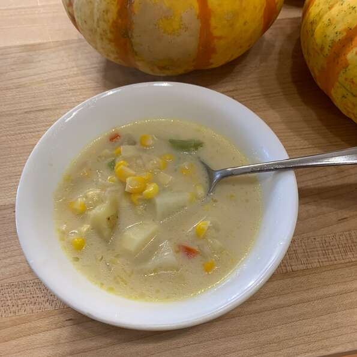

Description:
Summer corn chowder is basically a soup type dish made from cor and dices vegitables
Its really tasty and easy to make with my recipy provided
Usually this chowder is enjoyed in summer with families or can even savour alone.
Ingredients
- 2 tablespoons olive oil.
- 2 tablespoons butter
- 1 large onion, diced
- 3 tablespoons all-purpose flour.
- 5 cups vegetable broth
- 2 large russet potatoes, cut into 1/4-inch pieces
- 4 cups corn kernels
- ½ cup diced red bell pepper
- ½ cup diced green bell pepper
- 1 cup half-and-half
- ¼ teaspoon ground black pepper
- salt to taste
Steps
- Heat olive oil and butter in a Dutch oven over low heat. Add onion; cook until tender, about 10 minutes. Sprinkle flour over onion; cook and stir until onion is coated, about 5 minutes.
- Stir vegetable broth and potatoes into the onion mixture; bring to a boil. Reduce heat to medium; cook partially covered until
potatoes are tender, about 10 minutes. Add corn, red pepper, green pepper, half-and-half, ground black pepper, and salt. Reduce heat to low;
cook and stir until corn is softened,
about 8 minutes.